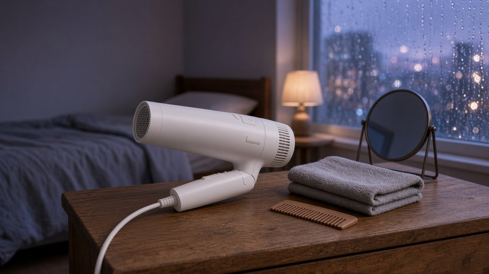
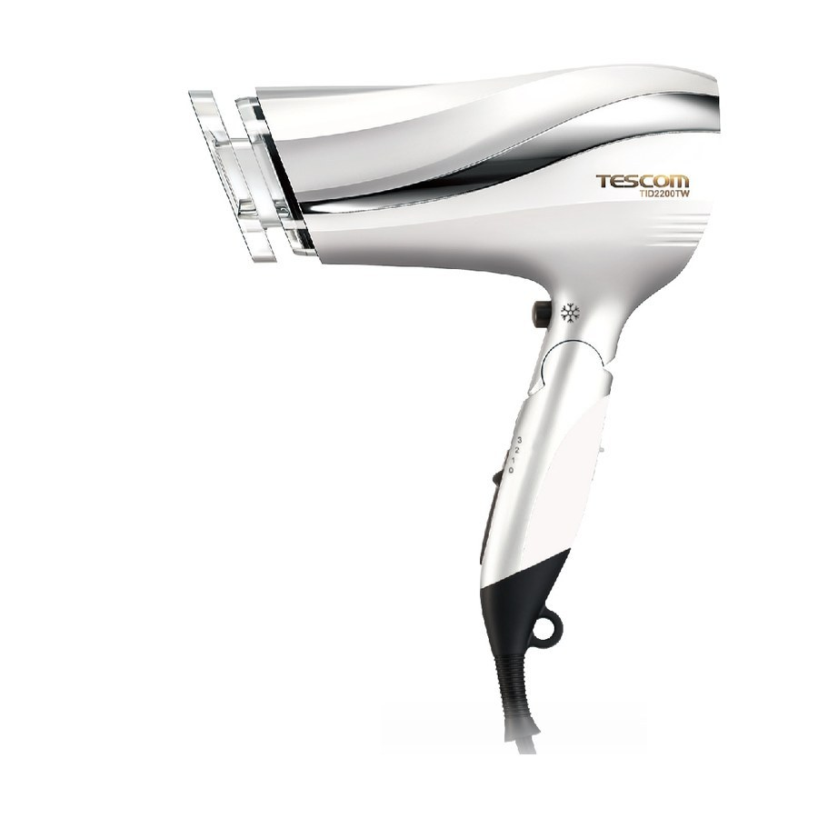
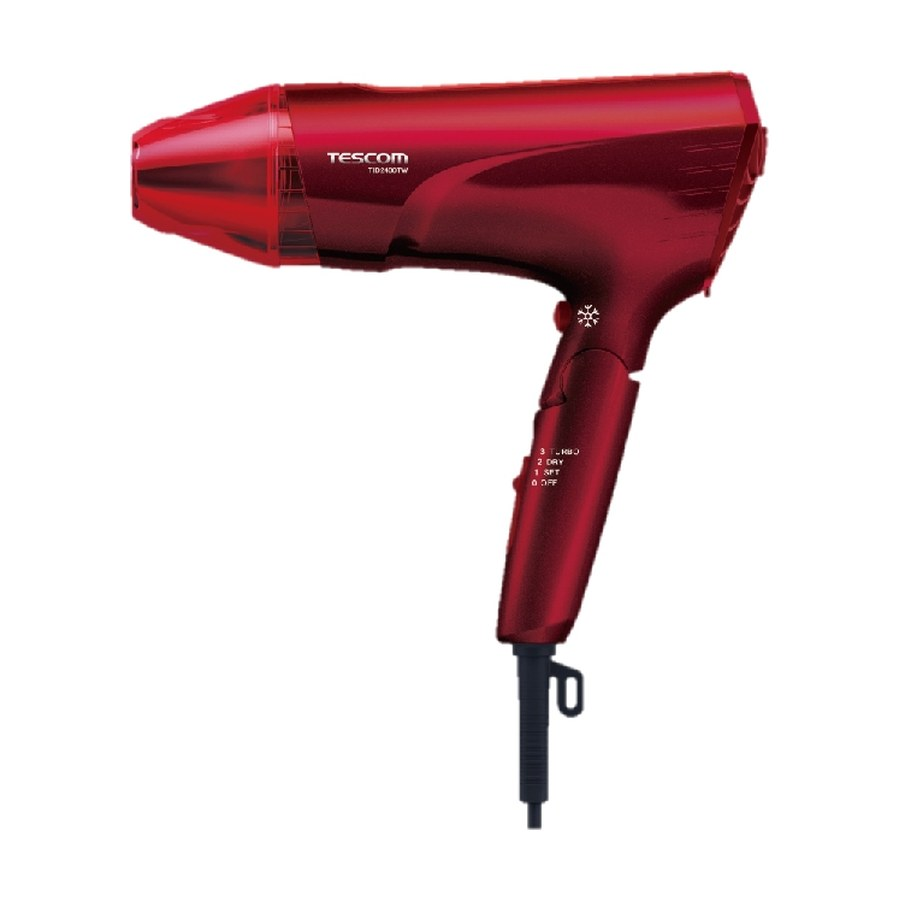
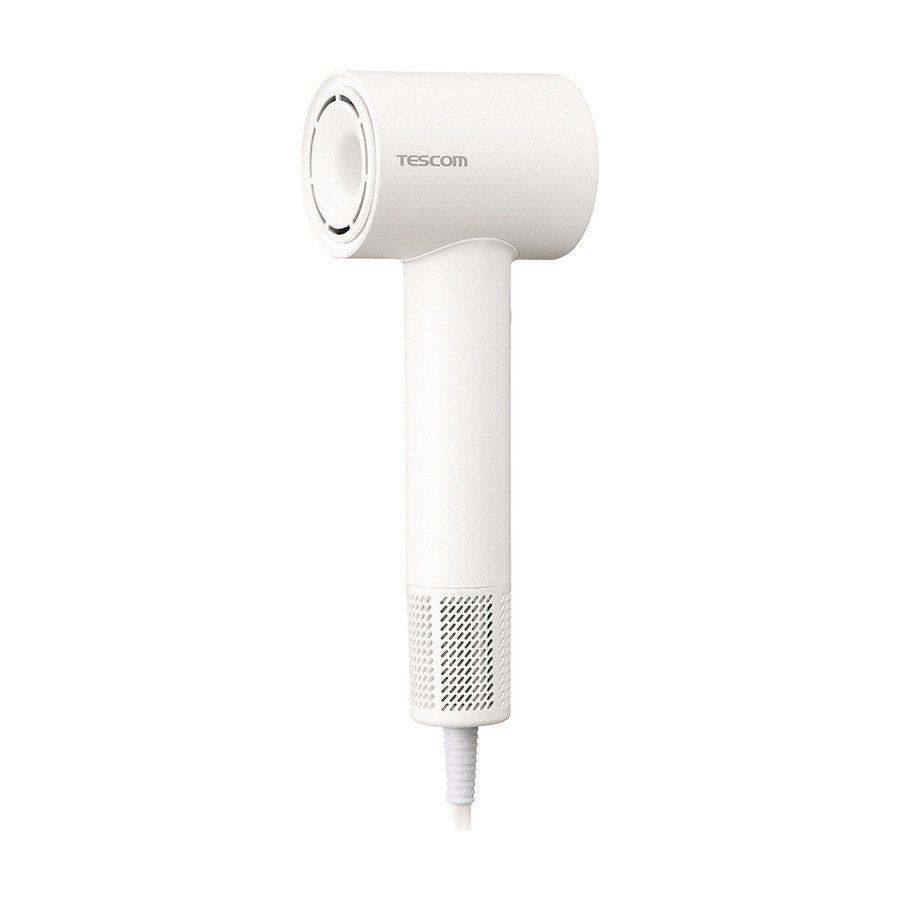
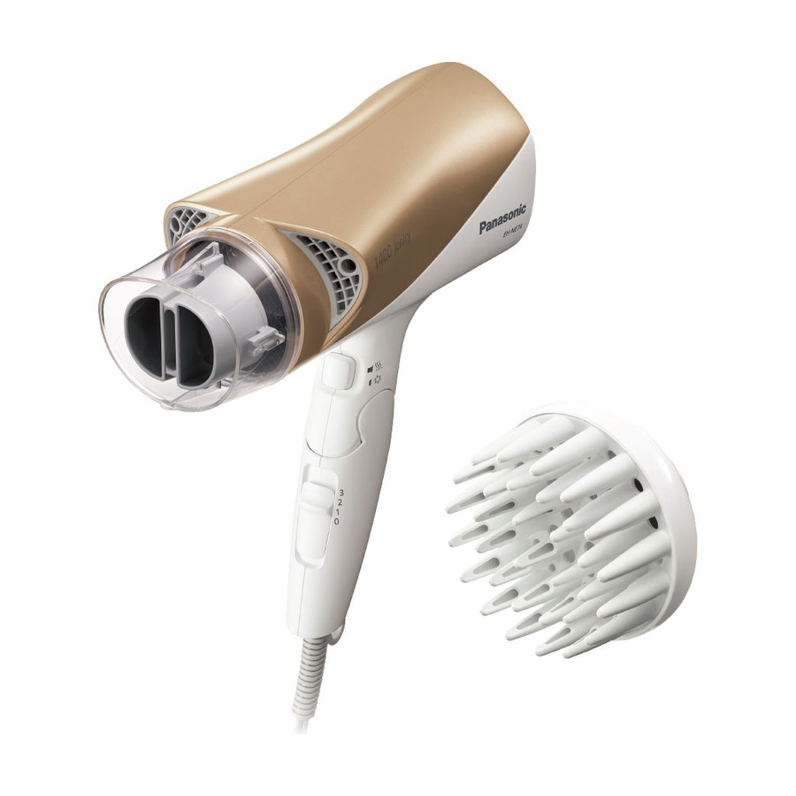

租屋吹風機怎麼挑？怕跳電先看瓦數：4 款比較（2026）
本文怎麼整理。依 2026 年 11 月 27 日品牌官網、官方購物商城與 Panasonic 美容商品型錄，比較 4 款 NT$1,049–1,790 的吹風機，沒有實機測試，也不比較銷量。缺少的規格以「未列」標記。內容由 AI 協助整理，規格與價格依文中來源核對。
快速結論：先排除不適合的
- NT$1,049–1,290主價位帶。跨價位參照為 NT$1,690 與 NT$1,790，四款最高／最低約 1.71 倍。價格為 TESCOM 官網售價及台灣松下官方購物商城會員優惠價（2026-11-27 查詢）。
- 1,200W–1,500W4 款高檔或額定功率
- 320–570g原廠標示重量，量法各異
以 110V、15A 分路為例，功率因數取 1。吹風機以 1,200–1,500W 運轉時，同分路再開 600W 電暖器或電鍋，合計 1,800–2,100W（約 16.4–19.1A），超過 15A 額定。看分路算法與低瓦數檔試算。
- 想選查詢日價格最低、且有標示噪音值的款式
-
想要有低瓦數檔
TESCOM TID2400TW｜1,500W（3-TURBO）／630W（1-SET）・1.7m 電線 不適合 要原廠明列可摺疊的人（官網未列）
-
重視本體重量
TESCOM TD760TW（跨價位參照）｜1,200W（2+熱風）・僅本體 320g 不適合 需要原廠列出風量或獨立冷風鍵的人（未列）
-
要可摺疊、2 段風量
Panasonic EH-NE74（跨價位參照）｜1,400W・420g（是否含電線未列） 不適合 買前要確認電源線長度的人（未列）
編號為文章編排順序，不是實機評測排名。
吹頭髮前先關電暖器或電鍋，或改插另一條分路；住宿舍以宿舍規定為準。
目錄
4 款候選怎麼對照
本站含蝦皮分潤連結，透過連結購買我可能獲得分潤，不影響你的價格
| 商品 | 標示瓦數（分路估算） | 重量 | 電線／收納 | 價格 |
|---|---|---|---|---|
|
 |
1,500W（3-熱風） | 570g（本體） | 1.7m 原廠說明書寫可折疊，但規格欄型號為 TID2100TW，買前向原廠確認。 |
NT$1,049 TESCOM 官網售價（2026-11-27 查詢） |
|
 |
1,500W（3-TURBO）／630W（1-SET） | 520g（規格表主機重量） | 1.7m・摺疊未列 | NT$1,290 TESCOM 官網售價（2026-11-27 查詢） |
|
 |
1,200W（2+熱風） | 320g（僅本體） | 1.7m・摺疊未列 | NT$1,690 TESCOM 官網售價（2026-11-27 查詢）・跨價位參照 |
|
 |
1,400W | 420g（是否含電線未列） | 電源線長度未列・可摺疊 | NT$1,790 台灣松下官方購物商城會員優惠價（2026-11-27 查詢）・跨價位參照 |
查詢日 2026-11-27・編號非排名・點型號看詳細
- TESCOM TID2200TW NT$1,049 TESCOM 官網售價（2026-11-27 查詢） 1,500W（3-熱風） · 570g（本體） · 電源線 1.7m。原廠說明書寫可折疊，但規格欄型號為 TID2100TW，買前向原廠確認。 70dB（TURBO-HOT） · 原廠 1 年，可註冊延保至 2 年
- TESCOM TID2400TW NT$1,290 TESCOM 官網售價（2026-11-27 查詢） 1,500W（3-TURBO）／630W（1-SET） · 520g（規格表主機重量） · 電源線 1.7m・摺疊未列 一鍵式冷風切換鈕 · 原廠 1 年，可註冊延保至 2 年
- TESCOM TD760TW NT$1,690 TESCOM 官網售價（2026-11-27 查詢）・跨價位參照 1,200W（2+熱風） · 僅本體 320g · 電源線 1.7m・摺疊未列 官網寫 BLDC 馬達、I 型結構
- Panasonic EH-NE74 NT$1,790 台灣松下官方購物商城會員優惠價（2026-11-27 查詢）・跨價位參照 1,400W · 420g（是否含電線未列） · 110V 可摺疊 · 速冷開關 · 電源線長度未列
蝦皮售價依賣場即時變動，以點進去的頁面為準。
重量量法各款不同，風量來源與測試條件見選購重點。TESCOM 原廠保固 1 年，完成官網註冊並上傳購買證明後延至 2 年；Panasonic 全機 1 年。
逐款比較
TESCOM
TID2200TW
TESCOM TID2200TW（1,500W，本體 570g）
- 消耗電量
- 1,500W（3-熱風；其他檔位未列）
- 風量
- 2.0 m³/分（規格表未列條件）
- 重量
- 570g（本體）／590g（裝上保濕式標準吹嘴）
- 尺寸
- 283 × 194 × 90 mm（長 × 寬 × 高，本體）
- 電源
- AC 110V 60Hz
- 電源線
- 1.7m
- 冷風
- 官網寫「冷熱風一鍵切換模式」
- 噪音值
- 70dB（TURBO-HOT）
- 安全
- 防過熱裝置（溫控器、溫度保險絲）
- 摺疊
- 原廠說明書寫可折疊，但規格欄型號為 TID2100TW，買前向原廠確認。
- 保固
- 原廠 1 年；官網註冊並上傳購買證明後延保 1 年，合計 2 年
官網規格列 3-熱風 1,500W、風量 2.0 m³/分、電源線 1.7m，本體 570g（裝上保濕式標準吹嘴 590g）；噪音值 70dB（TURBO-HOT），是 4 款裡唯一列出噪音值的。官網寫冷熱風一鍵切換模式、易拔型插頭，以及抑制靜電、修護離子。
其他檔位瓦數未列，分路算例採用 3-熱風的 1,500W。
規格來源：TESCOM 台灣官網商品頁、商品頁所附原廠說明書
TESCOM
TID2400TW
TESCOM TID2400TW（1,500W（3-TURBO）／630W（1-SET））
- 消耗電量
- 1,500W（3-TURBO）／630W（1-SET）
- 風量
- 2.3 m³/分（1(COOL)-熱(TURBO) 時）
- 重量
- 520g（規格表主機；商品重點另寫 495g）
- 尺寸
- 215 × 238 × 77 mm（長 × 寬 × 高）
- 電源線
- 1.7m
- 冷風
- 一鍵式冷風切換鈕
- 安全
- 防過熱裝置（溫控器、溫度保險絲）
- 摺疊
- 未列
- 保固
- 原廠 1 年；官網註冊並上傳購買證明後延保 1 年，合計 2 年
官網規格列 3-TURBO 1,500W、1-SET 630W，風量 2.3 m³/分（開關位置 1(COOL)-熱(TURBO) 時），電源線 1.7m，主機 520g。官網寫一鍵式冷風切換鈕、可拆式濾網蓋、易拔型插頭，以及正負離子／修護離子。
4 款裡只有它列出 630W 的低瓦數檔，和 600W 電暖器同分路時合計 1,230W；但開到 3-TURBO 就是 1,500W。限制是可摺疊未列，且同頁商品重點寫 495g，本文採規格表所列的主機 520g。
規格來源：TESCOM 台灣官網商品頁、TESCOM 2026-10-15 延保公告
TESCOM
TD760TW
TESCOM TD760TW（2+熱風 1,200W，僅本體 320g）
- 消耗電量
- 1,200W（2+熱風；其他檔位未列）
- 風量
- 未列
- 重量
- 320g（本體）／410g（含電線）／425g（附溫和濕潤風罩）
- 尺寸
- 239 × 92 × 70 mm（高 × 長 × 寬，本體）
- 電源線
- 1.7m
- 冷風鍵
- 官網寫「智能風溫 自動調節冷風熱風」，未寫獨立冷風鍵
- 安全
- 防過熱裝置
- 摺疊
- 未列（官網寫 I 型結構）
- 保固
- 原廠 1 年；官網註冊並上傳購買證明後延保 1 年，合計 2 年
官網規格列 2+熱風 1,200W、電源線 1.7m，重量分三種量法：僅本體 320g，本體含電線 410g，附溫和濕潤風罩 425g；僅本體重量是 4 款標示數字最低的（計入範圍各異）。官網寫 11 萬轉 BLDC 馬達、I 型結構、千萬級高濃度負離子，以及「智能風溫 自動調節冷風熱風」。
限制是風量、其他檔位瓦數、可摺疊資訊均未列，官網也沒寫獨立冷風鍵。1,200W 加 600W 電暖器仍是 1,800W，同樣要錯開使用。
規格來源：TESCOM 台灣官網商品頁、TESCOM 2026-10-15 延保公告
Panasonic 國際牌
EH-NE74
Panasonic 國際牌 EH-NE74（1,400W，420g）
- 消耗功率
- 1,400W（各檔瓦數只列這一項）
- 風量
- 1.8 m³/分（Panasonic 自測）
- 風溫／風量段數
- 3 段／2 段
- 冷風
- 速冷開關
- 重量
- 420g（是否含電線未列）
- 尺寸
- 22.7 × 17.3 × 9.2 cm（高 × 寬 × 深）
- 電壓
- 110V
- 摺疊
- 可
- 配件
- 速乾吹嘴；型錄註明擴散烘罩限 EH-NE74
- 電源線長度
- 未列
- 保固
- 全機 1 年
官網列重量 420g（是否含電線未列）、高 22.7 × 寬 17.3 × 深 9.2 cm，並寫冷熱雙溫、外置雙負離子吹口設計、超大風量 1.8 m³/分、速乾吹嘴、速冷開關與可摺疊設計。2026-10 美容商品型錄列 1,400W、3 段溫度、2 段風量、110V，風量為 Panasonic 自測值；擴散烘罩註明限 EH-NE74。
限制是型錄只列 1,400W，沒列較低檔位的瓦數，算分路負載只能以 1,400W 計；電源線長度未列，價格是 4 款最高。想要可摺疊又有 2 段風量，可以看這台。
規格來源：Panasonic 官網產品頁、台灣松下官方購物商城、Panasonic 2026-10 美容商品型錄、Panasonic 保固表
適合誰
- 想選這 4 款中售價最低、且有標示噪音值的機型：TESCOM TID2200TW（規格表列 70dB（TURBO-HOT）；本體 570g）。原廠說明書寫可折疊，但規格欄型號為 TID2100TW，買前向原廠確認。
- 想要有低瓦數檔的機型：TESCOM TID2400TW。1-SET（630W）與 600W 電暖器同分路合計 1,230W、約 11.2A，其他同分路電器也要計入；開 3-TURBO 1,500W 時一樣要錯開。
- 重視本體重量：TESCOM TD760TW（跨價位參照，僅本體 320g，原廠 1 年，可註冊延保至 2 年）。
- 想要可摺疊、速冷開關與 2 段風量：Panasonic EH-NE74（跨價位參照，全機保固 1 年，電源線長度未列）。
常見問題
吹頭髮時可以同時開電暖器或電鍋嗎？
先確認現場分路的額定電流，再合計同分路電器。以 110V、15A 為例，吹風機開到 1,200–1,500W 時，再加 600W 電暖器或電鍋，合計約 16.4–19.1A，超過額定。可以錯開使用，或把電器分接到不同分路。各款的電流算例。
這 4 款的風量數字可以直接比嗎？
不能直接比。Panasonic 的數字是原廠自測值，TESCOM 各款標示的測試條件不同，請參考選購重點的風量說明。
1,400W 和 1,500W 吹 10 分鐘，電費差多少？
以住宅非時間電價的非夏月第 121–330 度級距（每度 2.26 元）估算，1,400W 約 0.23 度、約 0.5 元；1,500W 約 0.25 度、約 0.6 元；以四捨五入前的金額相減，單次差約 0.04 元。
資料與更新紀錄
- 最後核對日
- 核對範圍
- 風量量測方式、折疊說明、保固：2026-11-27 查原廠型錄、說明書與保固公告。分路負載、電價與電鍋規格：同日查裝置規則、台電及大同官網。召回：2026-11-28 在標檢局商品召回訊息以「吹風機」、品牌（TESCOM、Panasonic、國際牌、松下）與 4 款完整型號查詢，未見本文型號；「吹風機」只查到 2011 年飛利浦 1 筆。
- 本次更新
- 在分路算例加上電鍋比較連結，移除兩處大同預覽連結，補上 AI 協助註記、封面情境示意標籤與發布日期，調整圖片載入。規格與價格沿用原查詢紀錄。
- 這次改了什麼
- 2026-11-28 補回「沒有實機測試」說明，補上裝置規則第 44 條單台 80% 規定與單台電流，統一用「分路」，FAQ 風量題先回答「不能直接比」，逐款補上保固來源，並依實際查詢重寫召回紀錄。2026-11-27 更正風量來源、收納與保固，標出跨價位參照，更新分路算例與電價級距，並移除目錄捲動高亮的 JS。
- 原查詢紀錄
- 2026-11-27 首次發布時查 TESCOM 台灣官網、Panasonic 官網與型錄，以及台灣松下官方購物商城的規格或價格。本輪沿用原價格，庫存未查。
- 資料來源
- TESCOM 台灣官網商品頁；Panasonic 官網產品頁、台灣松下官方購物商城與 2026-10 美容商品型錄；大同 TAC-06HT 電鍋規格；台電電價表；TESCOM TID2200TW 商品頁所附說明書；TESCOM 延保公告；Panasonic 保固表；標檢局公開召回公告。